CC5: Modelo Atómico y Equipartición
La hipótesis atómica conecta la estructura microscópica de la materia con las propiedades termodinámicas macroscópicas. El teorema de equipartición de la energía predice los calores específicos de gases a partir de sus grados de libertad moleculares.
Temas que cubre
- Hipótesis atómica: materia compuesta de átomos y moléculas con masa y estructura interna
- Grados de libertad: traslación (3), rotación (lineal: 2, no lineal: 3) y vibración (2 por modo)
- Teorema de equipartición: $\langle E_k\rangle = \tfrac{1}{2}k_BT$ por grado de libertad cuadrático
- Predicciones para $C_V$: monoatómico $\tfrac{3}{2}Nk_B$, diatómico $\tfrac{5}{2}Nk_B$ (sin vibración)
- Falla clásica: equipartición predice $C_V$ constante, pero experimentalmente varía con $T$
- Corrección cuántica: congelación de grados de libertad a baja temperatura (Einstein, Debye)
Conceptos clave
Teorema de equipartición
A temperatura $T$, cada grado de libertad que aparece cuadráticamente en el Hamiltoniano contribuye $\tfrac{1}{2}k_BT$ a la energía media. Grados traslacionales: $\tfrac{1}{2}mv_x^2$, etc. Grados vibracionales: energía cinética + potencial $\to$ $k_BT$ por modo vibracional.
Grados de libertad de moléculas
Monoatómico: 3 traslacionales. Diatómico: 3 traslacionales + 2 rotacionales + 2 vibracionales (1 modo). Poliatómico lineal: 3T + 2R + vibraciones. Poliatómico no lineal: 3T + 3R + vibraciones. A temperatura ordinaria, la vibración suele estar "congelada" cuánticamente.
Falla de la equipartición clásica
Clásicamente $C_V$ debería ser constante (independiente de $T$). Pero experimentalmente $C_V$ de los sólidos cae a cero cuando $T\to 0$ (ley de Dulong-Petit falla en el frío). Einstein (1907) y Debye (1912) explicaron esto con cuantización de los modos vibracionales.
Temperatura de Einstein $\Theta_E$
$\Theta_E = \hbar\omega_E/k_B$: temperatura por encima de la cual un modo vibracional está clásicamente activo. Para $T \gg \Theta_E$: el modo contribuye $k_BT$ (clásico). Para $T \ll \Theta_E$: el modo está congelado, contribución $\propto e^{-\Theta_E/T} \to 0$.
Fórmulas fundamentales



Qué hay que entender
- El teorema de equipartición es clásico — requiere que la energía del modo sea continua. Cuando $k_BT \ll \hbar\omega$ (energía del cuanto del modo), el modo está "congelado" y no contribuye a $C_V$.
- El hidrógeno molecular ($H_2$) muestra experimentalmente la congelación de grados de libertad: a temperatura ambiente solo están activos los 3 traslacionales y 2 rotacionales ($C_V = \frac{5}{2}Nk_B$); la vibración se activa solo por encima de ~3000 K.
- La ley de Dulong-Petit ($C_V = 3Nk_B$ para sólidos monoatómicos) predice bien a temperatura ordinaria pero falla a baja temperatura — esto motivó la revolución cuántica de Einstein en termodinámica.
- El número de grados de libertad no es siempre obvio: en sólidos, cada átomo tiene 3 modos vibracionales, cada uno con energía cinética + potencial = $2 \times \frac{1}{2}k_BT = k_BT$ → $C_V = 3Nk_B$ total (Dulong-Petit).